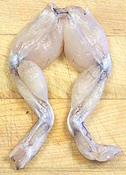

Frog
[family Ranidae (true frogs) mostly genus Rana (over 230
species)]
While one species of frog (Conraua goliath) can grow to 7
pounds, the edible frogs of commerce are generally less than 1 pound.
While frog eating is commonly associated with France, they are much more
commonly eaten in the U.S. South and Midwest, the Caribbean, Argetina,
Uruguay, Africa, China and Southeast Asia. In most cases only the hind
legs are eaten though in some areas for some species the back is also
used.
Frozen frog legs from China and Vietnam are now common in North
American markets serving local Asian communities. In Europe the most
eaten frog is the Edible Frog (Rana kl. esculenta). In the North
American the most eaten frog is the American Bull Frog (Rana
catesbeiana), a very large frog that can grow to 1.5 pounds and is
farmed in some regions. Photo ©
i0046.
More on Reptiles & Amphibians.

So, does frog really taste "just like chicken"? Well, only if one of
your chicken's grandmothers was messing around with a fish - it has just
a faint suggestion of fish flavor. The flesh is mild and less stringy
than chicken, more like Alligator, actually.
Buying:
While frog and frog legs have long been available
in the American South (Louisiana, and around there) and in certain parts
of the Midwest, they are now easily available wherever there is a
substantial Chinese or Southeast Asian community. Asian legs are from
aquaculture frogs which are somewhat lighter in flavor than wild frogs
and less likely to carry salmonella and parasites.
Frog legs are generally sold by count - how many pairs makes a pound.
Counts range from 2/4 for the largest and 16/20 for the smallest but 4/6
and 6/8 are the most common ranges. In some regions the legs will have
the backbone and back muscles attached to the legs ("saddle on"), but
those from Asia do not.
Subst:
Chicken wings, two largest joints (skin them).
Storing:
Fresh frog legs should be eaten within 2 days.
Frozen they can be safely kept for 6 months.
Prep:
If you buy your frog legs frozen, they're cleaned,
skinned and ready to go. You may wish to cut the pairs into individual
legs which makes cooking easier, and you may wish to cut off the bony
feet. Soak small legs in several changes of water. If the legs are large
scald them about 2 minutes in boiling salted water acidulated with lemon
juice (1/4 cup per quart) or citric acid.
If you caught your own frogs, you'll have to cut out the legs and skin
them. Frog is never cooked "skin-on" and the skin is sometimes toxic.
Cooking:
Frog cooks quite quickly, 20 to 30 minutes at a
simmer depending on size. When it is done the legs will separate into
separate joints and the meat will start to fall off the bones.
rp_frogz 061111 - www.clovegarden.com
©Andrew Grygus - agryg@clovegarden.com - photos on this
page not otherwise credited are © cg1 -
Linking to and non-commercial use of this page permitted